Lesespaziergang Materialpaket: 3 Geschichten, 6-fach differenziert – Herbst, Advent, Winter (Klasse 1–4, DaZ)

Lesespaziergang Vögel am Futterhaus – 6-fach differenziert mit Bildkarten, Sternchenaufgaben und Audio (Klasse 1–4)

Lesespaziergang Auf dem Weihnachtsmarkt – 6-fach differenziert mit Bildkarten, Sternchenaufgaben und Audio (Klasse 1–4)

Lesespaziergang Ein Nebeltag im November – 6-fach differenziert mit Bildkarten, Sternchenaufgaben und Audio (Klasse 1–4)

3D-Anhänger Schulanfang – Oktaeder, Diamant und Kugel zum Ausmalen und Basteln, 3-fach differenziert (Klasse 3/4)
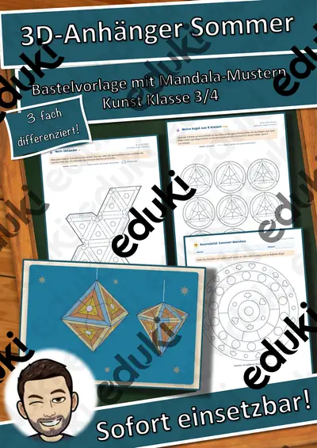
3D-Anhänger Sommer – Oktaeder, Diamant und Kugel zum Ausmalen und Basteln, 3-fach differenziert (Klasse 3/4)
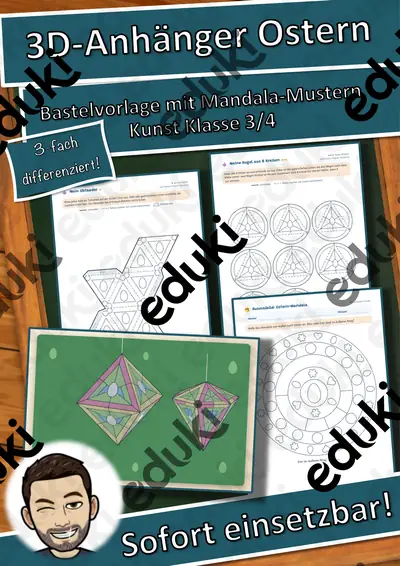
3D-Anhänger Ostern – Oktaeder, Diamant und Kugel zum Ausmalen und Basteln, 3-fach differenziert (Klasse 3/4)

3D-Anhänger Fasching – Oktaeder, Diamant und Kugel zum Ausmalen und Basteln, 3-fach differenziert (Klasse 3/4)

3D-Anhänger Frühling – Oktaeder, Diamant und Kugel zum Ausmalen und Basteln, 3-fach differenziert (Klasse 3/4)
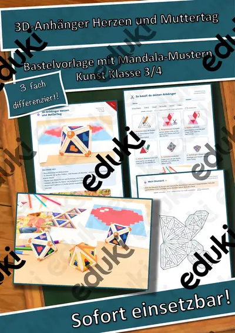
3D-Anhänger Herzen und Muttertag – Oktaeder, Diamant und Kugel zum Ausmalen und Basteln, 3-fach differenziert (Klasse 3/4)
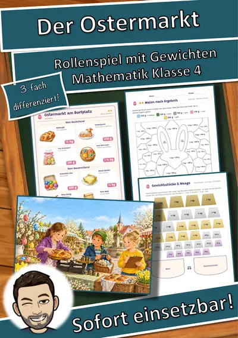
Der Ostermarkt – Rollenspiel Gewichte mit Brüchen ½ ¼ ¾ kg, 3-fach differenziert (Klasse 4)

Lesespaziergang DaZ: Wir backen – Wortschatz mit Rätseln, 3-fach differenziert (Klasse 1–4)

Lesespaziergang DaZ: Spielen im Schnee – Wortschatz mit Rätseln, 3-fach differenziert (Klasse 1–4)

Lesespaziergang DaZ: Gemüse – Wortschatz mit Rätseln, 3-fach differenziert (Klasse 1–4)

Lesespaziergang DaZ: Sankt Martin – Wortschatz mit Rätseln, 3-fach differenziert (Klasse 1–4)

3D-Anhänger Herbst – Oktaeder, Diamant und Kugel zum Ausmalen und Basteln, 3-fach differenziert (Klasse 3/4)

Materialpaket Rechenwelten im Winter für die 4. Klasse: 5 Mathe-Rollenspiele, 3-fach differenziert (Wintertombola, Schneeburg, Paketstation & mehr)

Materialpaket Winter und Advent für die 4. Klasse: 5 Lesespurgeschichten mit Rätselaufgaben (Weihnachtsmarkt, Fröbelsterne, Sternbilder & mehr)
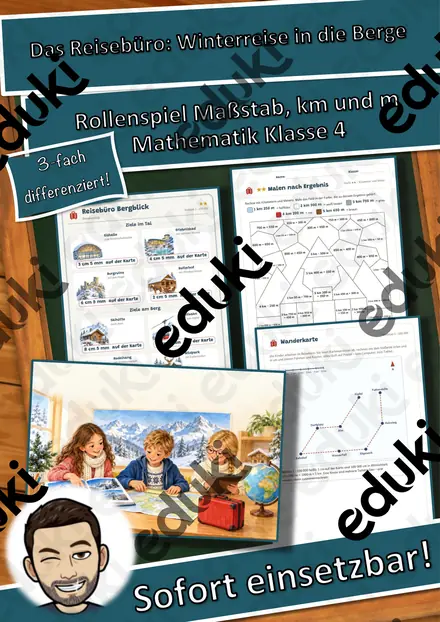
Das Reisebüro: Winterreise in die Berge – Rollenspiel Maßstab, Kilometer und Meter, 3-fach differenziert (Klasse 4)

3D-Anhänger Winter – Oktaeder, Diamant und Kugel zum Ausmalen und Basteln, 3-fach differenziert (Klasse 3/4)

3D-Anhänger Advent – Oktaeder, Diamant und Kugel zum Ausmalen und Basteln, 3-fach differenziert (Klasse 3/4)
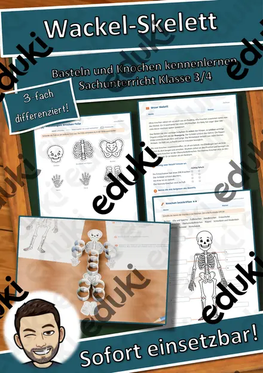
Halloween Wackel-Skelett – Bastelvorlage, Sachtext Skelett und Knochen beschriften, 3-fach differenziert (Klasse 3/4)
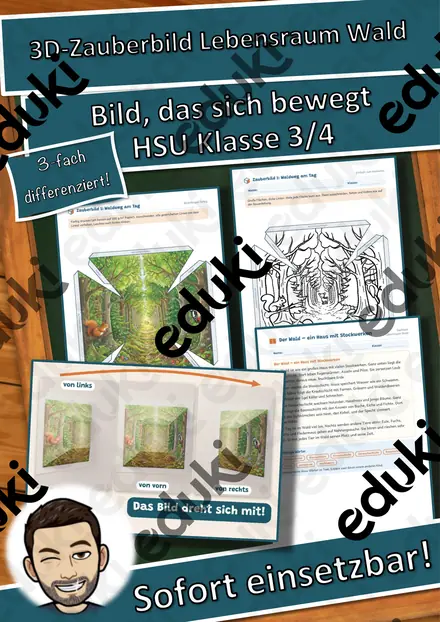
3D-Zauberbild Lebensraum Wald – Umkehrperspektive basteln, Sachtext und Forscherauftrag, 3-fach differenziert (Klasse 3/4)

Klapp-Spukhaus zu Halloween – Bastelvorlage mit Schreibanlass und Wortspeicher, 3-fach differenziert (Klasse 3/4)
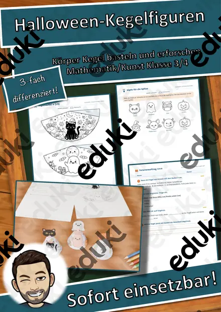
Halloween-Kegelfiguren – Körper Kegel basteln und erforschen, 3-fach differenziert (Mathematik/Kunst Klasse 3/4)

Pop-up-Karten Weihnachten – Bastelvorlage mit Stufen-Pop-up, Motiven und Weihnachtsgruß, 3-fach differenziert (Klasse 3/4)

Wimpelkette Winter – Bastelvorlage mit Wintermotiven, Buchstaben WINTER und eigenen Wimpeln, 3-fach differenziert (Klasse 1–4)

Advents-Häuserstadt – Klassen-Adventskalender zum Basteln mit 24 Adventsaufgaben, 3-fach differenziert (Klasse 1–4)
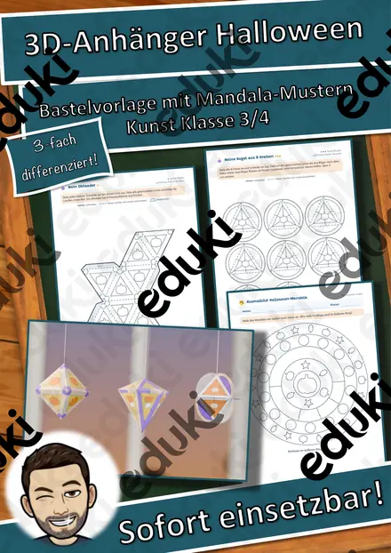
3D-Anhänger Halloween – Oktaeder, Diamant und Kugel zum Ausmalen und Basteln, 3-fach differenziert (Klasse 3/4)

Lesespaziergang DaZ: Im Klassenzimmer – Wortschatz mit Rätseln, 3-fach differenziert (Klasse 1–4)
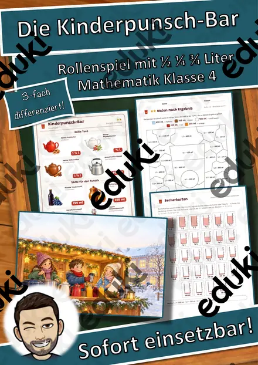
Die Kinderpunsch-Bar – Rollenspiel Brüche in Größen: ½ l, ¼ l, ¾ l und Milliliter, 3-fach differenziert (Klasse 4)
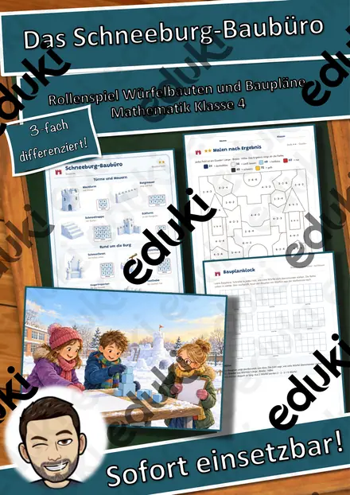
Das Schneeburg-Baubüro – Rollenspiel Würfelbauten, Baupläne und Rauminhalt, 3-fach differenziert (Klasse 4)
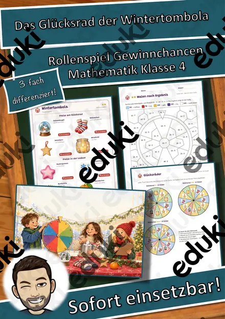
Das Glücksrad der Wintertombola – Rollenspiel Gewinnchancen und Wahrscheinlichkeit, 3-fach differenziert (Klasse 4)
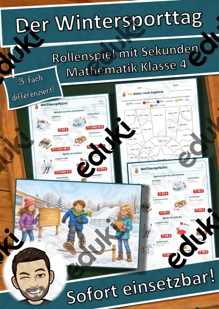
Der Wintersporttag – Rollenspiel Sekunden, Minuten und Sekunden umwandeln, Rangliste, 3-fach differenziert (Klasse 4)
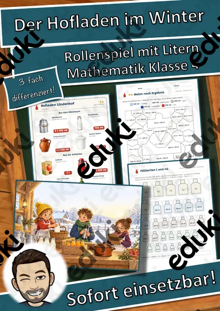
Der Hofladen im Winter – Rollenspiel Hohlmaße l und ml, 3-fach differenziert (Klasse 4)

Lesespaziergang: Frühblüher im Garten und im Wald – 3-fach differenziert (★/★★/★★★), Klasse 2–4

Lesespaziergang: Verkleiden und Feiern im Fasching – 3-fach differenziert (★/★★/★★★), Klasse 2–4

Lesespaziergang: Tiere in Eis und Wüste – 3-fach differenziert (★/★★/★★★), Klasse 2–4

Lesespaziergang: Obst und Gemüse im Winter – 3-fach differenziert (★/★★/★★★), Klasse 2–4
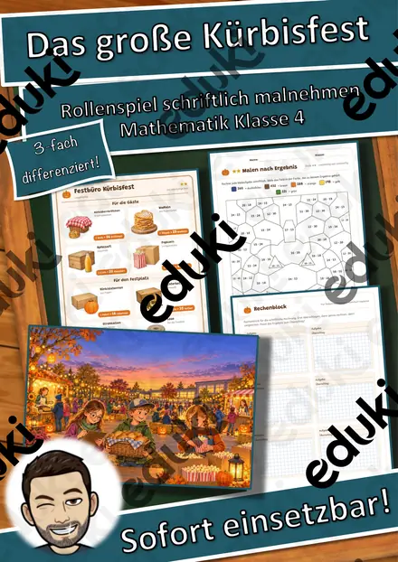
Das große Kürbisfest – Rollenspiel schriftliche Multiplikation und Überschlag, 3-fach differenziert (Klasse 4)

Lesespaziergang: Spuren im Schnee – 3-fach differenziert (★/★★/★★★), Klasse 2–4

Lesespaziergang: Plätzchen backen im Advent – 3-fach differenziert (★/★★/★★★), Klasse 2–4

Lesespaziergang: Zugvögel im Herbst – 3-fach differenziert (★/★★/★★★), Klasse 2–4

Lesespaziergang: Blätter und Bäume im Herbst – 3-fach differenziert (★/★★/★★★), Klasse 2–4

Paketstation im Advent – Rollenspiel Gewichte kg, g und t, Malnehmen mit Größen, 3-fach differenziert (Klasse 4)

Lesespaziergang: Vorräte der Tiere im Herbst – 3-fach differenziert (★/★★/★★★), Klasse 2–4

Lesespaziergang: Tiere im Winterwald – 3-fach differenziert (★/★★/★★★), Klasse 2–4

Lesespaziergang: Igel im Herbst – 3-fach differenziert (★/★★/★★★), Klasse 2–4

Lesespaziergang: Halloween-Nacht im Kürbisgarten – 3-fach differenziert (★/★★/★★★), Klasse 2–4

Rechnen im Winter-Café – Rollenspiel Rechnen mit Geld, 3-fach differenziert (Klasse 2–4)

Ramadan und Zuckerfest – Lesespurgeschichte mit Rätselaufgaben (Klasse 4)

Fasching, Fastnacht und Karneval – Bräuche in der närrischen Zeit – Lesespurgeschichte mit Rätselaufgaben (Klasse 4)

Sternbilder am Winterhimmel – Orion, Großer Wagen und Polarstern – Lesespurgeschichte mit Rätselaufgaben (Klasse 4)
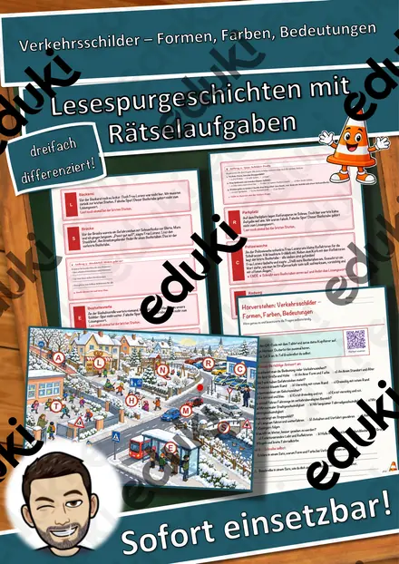
Verkehrsschilder – Formen, Farben, Bedeutungen – Lesespurgeschichte mit Rätselaufgaben (Klasse 4)

Elisabeth von Thüringen – Brot, Rosen, Nächstenliebe – Lesespurgeschichte mit Rätselaufgaben (Klasse 4)
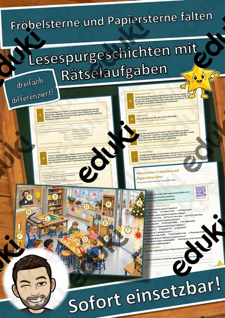
Fröbelsterne und Papiersterne falten – Lesespurgeschichte mit Rätselaufgaben (Klasse 4)
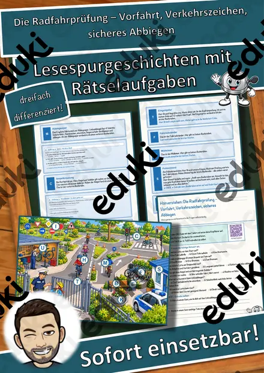
Die Radfahrprüfung – Vorfahrt, Verkehrszeichen, sicheres Abbiegen – Lesespurgeschichte mit Rätselaufgaben (Klasse 4)
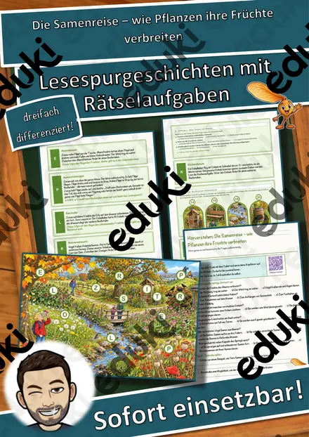
Die Samenreise – wie Pflanzen ihre Früchte verbreiten – Lesespurgeschichte mit Rätselaufgaben (Klasse 4)
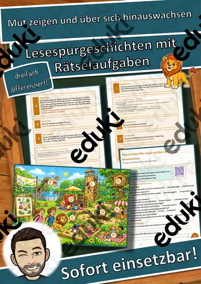
Mut zeigen und über sich hinauswachsen – Lesespurgeschichte mit Rätselaufgaben (Klasse 4)

Gotteshäuser der Weltreligionen – Lesespurgeschichte mit Rätselaufgaben (Klasse 4)
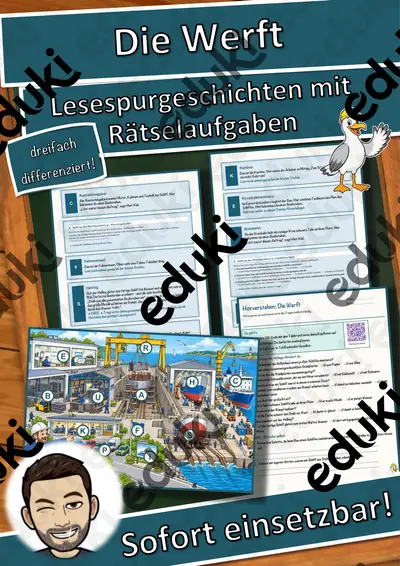
Die Werft – Lesespurgeschichte mit Rätselaufgaben (Klasse 4)
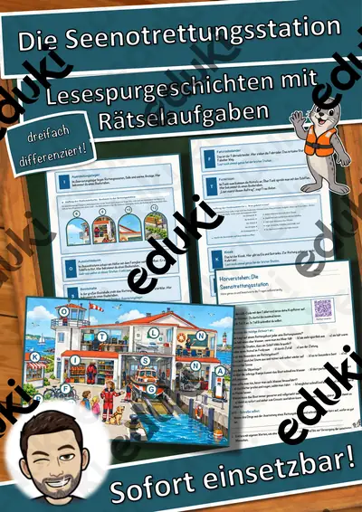
Die Seenotrettungsstation – Lesespurgeschichte mit Rätselaufgaben (Klasse 4)
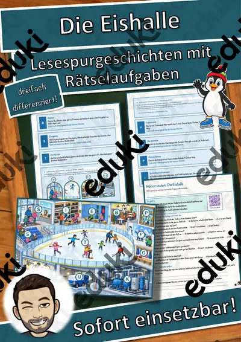
Die Eishalle – Lesespurgeschichte mit Rätselaufgaben (Klasse 4)
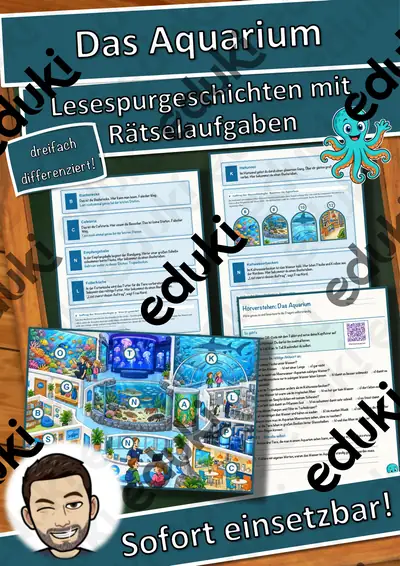
Das Aquarium – Lesespurgeschichte mit Rätselaufgaben (Klasse 4)
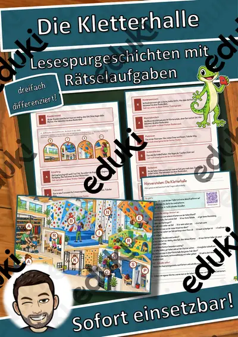
Die Kletterhalle – Lesespurgeschichte mit Rätselaufgaben (Klasse 4)
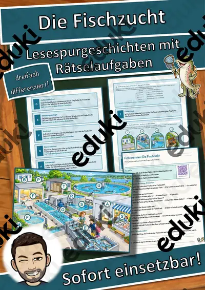
Die Fischzucht – Lesespurgeschichte mit Rätselaufgaben (Klasse 4)
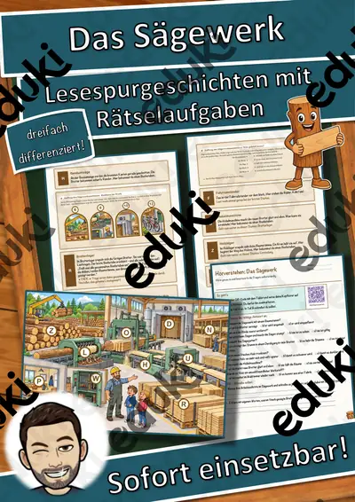
Das Sägewerk – Lesespurgeschichte mit Rätselaufgaben (Klasse 4)
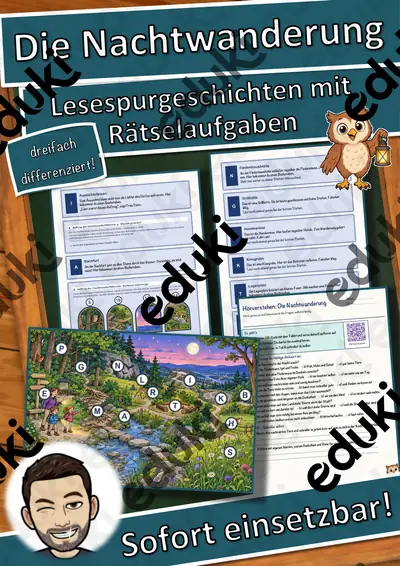
Die Nachtwanderung – Lesespurgeschichte mit Rätselaufgaben (Klasse 4)
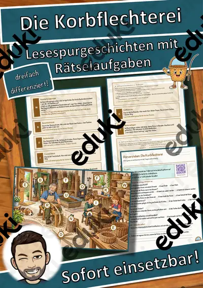
Die Korbflechterei – Lesespurgeschichte mit Rätselaufgaben (Klasse 4)
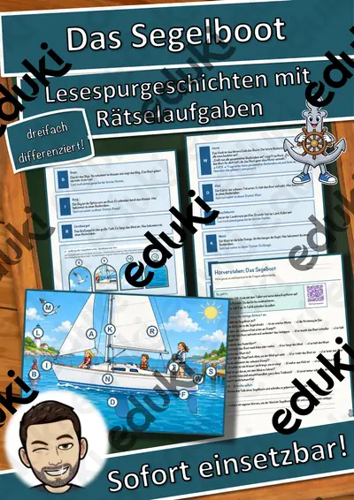
Das Segelboot – Lesespurgeschichte mit Rätselaufgaben (Klasse 4)
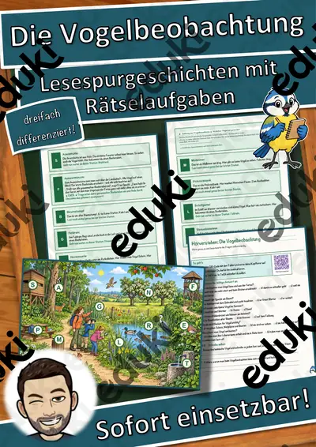
Die Vogelbeobachtung – Lesespurgeschichte mit Rätselaufgaben (Klasse 4)
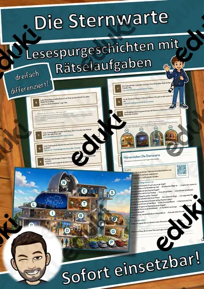
Die Sternwarte – Lesespurgeschichte mit Rätselaufgaben (Klasse 4)
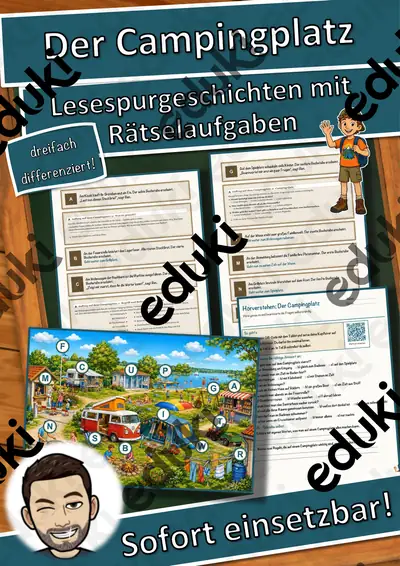
Der Campingplatz – Lesespurgeschichte mit Rätselaufgaben (Klasse 4)

Das Fahrrad – Lesespurgeschichte mit Rätselaufgaben (Klasse 4)
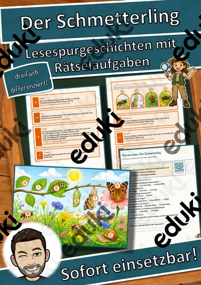
Der Schmetterling – Lesespurgeschichte mit Rätselaufgaben (Klasse 4)
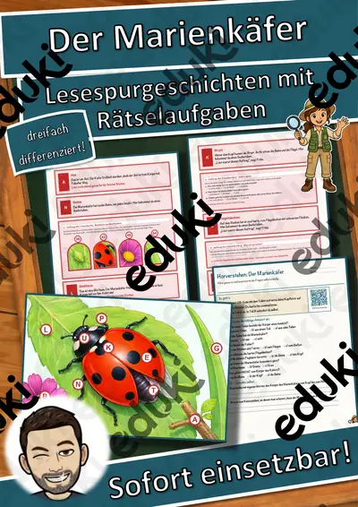
Der Marienkäfer – Lesespurgeschichte mit Rätselaufgaben (Klasse 4)
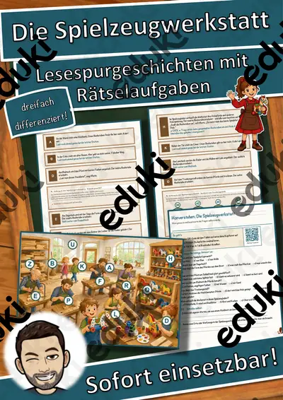
Die Spielzeugwerkstatt – Lesespurgeschichte mit Rätselaufgaben (Klasse 4)
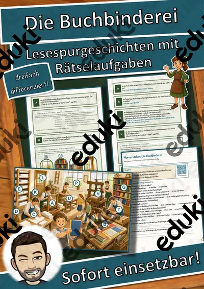
Die Buchbinderei – Lesespurgeschichte mit Rätselaufgaben (Klasse 4)
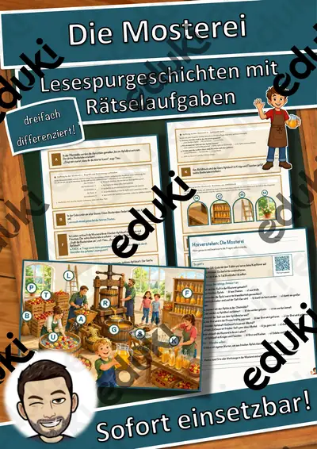
Die Mosterei – Lesespurgeschichte mit Rätselaufgaben (Klasse 4)
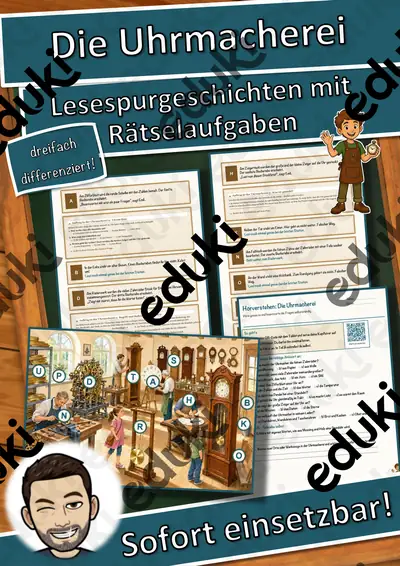
Die Uhrmacherei – Lesespurgeschichte mit Rätselaufgaben (Klasse 4)
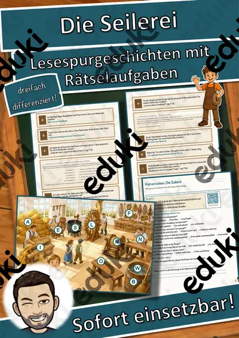
Die Seilerei – Lesespurgeschichte mit Rätselaufgaben (Klasse 4)
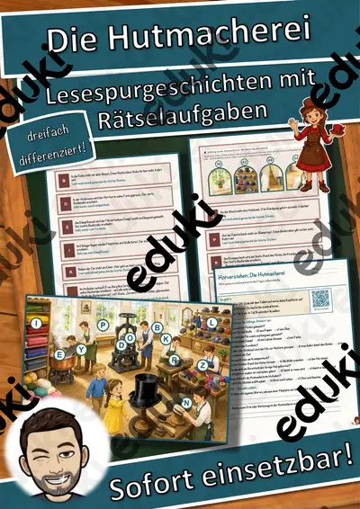
Die Hutmacherei – Lesespurgeschichte mit Rätselaufgaben (Klasse 4)
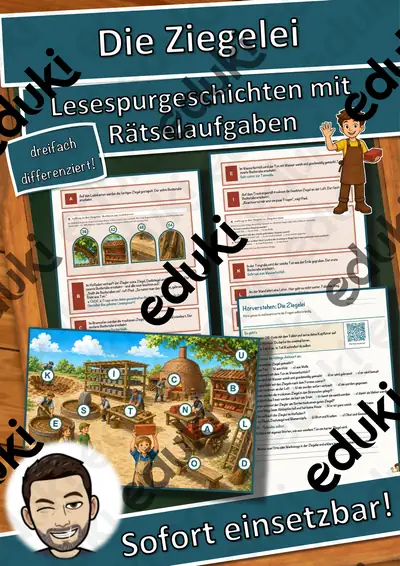
Die Ziegelei – Lesespurgeschichte mit Rätselaufgaben (Klasse 4)
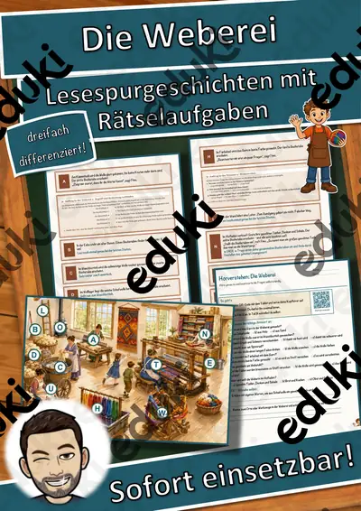
Die Weberei – Lesespurgeschichte mit Rätselaufgaben (Klasse 4)
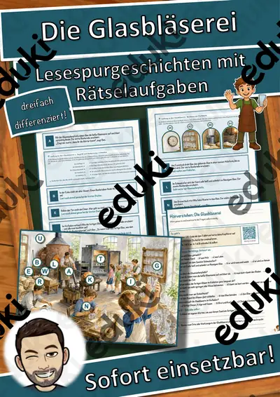
Die Glasbläserei – Lesespurgeschichte mit Rätselaufgaben (Klasse 4)
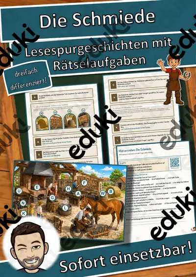
Die Schmiede – Lesespurgeschichte mit Rätselaufgaben (Klasse 4)
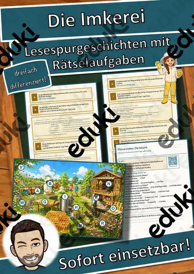
Die Imkerei – Lesespurgeschichte mit Rätselaufgaben (Klasse 4)
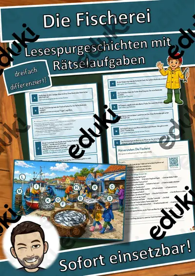
Die Fischerei – Lesespurgeschichte mit Rätselaufgaben (Klasse 4)
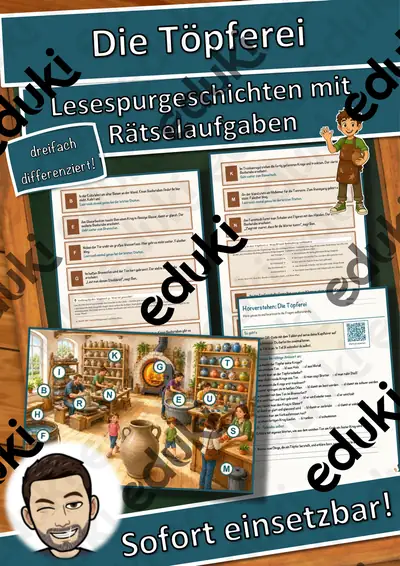
Die Töpferei – Lesespurgeschichte mit Rätselaufgaben (Klasse 4)
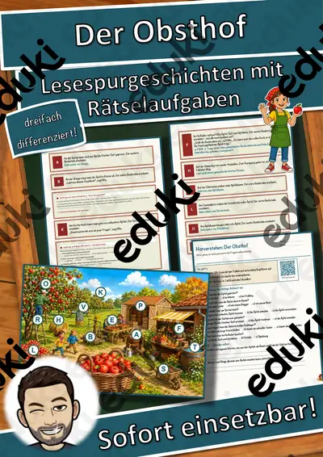
Der Obsthof – Lesespurgeschichte mit Rätselaufgaben (Klasse 4)
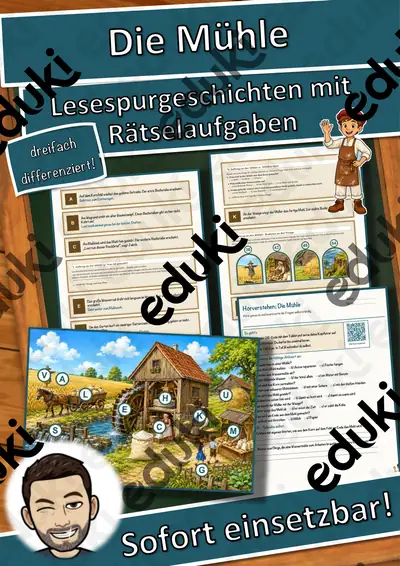
Die Mühle – Lesespurgeschichte mit Rätselaufgaben (Klasse 4)
Der Weihnachtsmarkt – Lesespurgeschichte mit Rätselaufgaben (Klasse 4)
Die Wüste – Lesespurgeschichte mit Rätselaufgaben (Klasse 4)

Der Nordpol – Lesespurgeschichte mit Rätselaufgaben (Klasse 4)
Die Tankstelle – Lesespurgeschichte mit Rätselaufgaben (Klasse 4)

Wichtel beschreiben: Schreibanlass mit 4 Wichtelbildern, Wortspeicher und Checkliste (Klasse 3–4)

Aaskrähe Lückentext mit Wortspeicher Hörverstehen und Suchsel

Artemis - Griechische Götter - Lückentext mit Wortspeicher

Materialpaket Griechische Götter - Lückentexte mit Wortspeicher, Plakate und Ausmalbilder

Zeus - Griechische Götter - Lückentext mit Wortspeicher

Hermes - Griechische Götter - Lückentext mit Wortspeicher

Demeter - Griechische Götter - Lückentext mit Wortspeicher

Apollo - Griechische Götter - Lückentext mit Wortspeicher

Valentinstag Lückentext mit Wortspeicher

Klammerkarten: Am Meer – Klammerkarten – Klasse 1–4

Fächer-Steckbriefe A–Z Klasse 1–10: Baukasten für Lehrkräfte – kostenlos

Übertritt nach Klasse 4: Baukasten für Lehrkräfte – kostenlos

Lernentwicklungsgespräche Klasse 1–10: Baukasten für Lehrkräfte – kostenlos

Elternabend Klasse 1–10: Baukasten für Lehrkräfte – kostenlos

Klammerkarten: Dinosaurier – Klammerkarten – Klasse 1–4

Ich habe, wer hat? Obst und Gemüse – Lese-Schleifen – Klasse 1–4

Himmel und Hölle: Dinosaurier – Himmel und Hölle – Klasse 1–4

Wort-Bild-Karten: Bauernhof – Wort-Bild-Karten – Klasse 1–4

Sprechanlässe: Sport – Sprechanlässe – Klasse 1–4

Memory: Schule und Klassenzimmer – Bild-Wort-Spiele – Klasse 1–4

Wortspiele: Sag es nicht! Sommer – Klasse 2–4

Himmel und Hölle: Bauernhof – Himmel und Hölle – Klasse 1–4

Lesen, Malen und Kleben: Weltall – Lesen und Malen – Klasse 1–4

Wortgitter-Suchsel: Berufe – Wortgitter – Klasse 1–4

Lesen, Malen und Kleben: Ritter und Burg – Lesen und Malen – Klasse 1–4

Sprechanlässe: Bauernhof – Sprechanlässe – Klasse 1–4

Domino: Schule und Klassenzimmer – Bild-Wort-Spiele – Klasse 1–4

Ich habe, wer hat? Im Garten – Lese-Schleifen – Klasse 1–4

Wortspiele: Sag es nicht! Im Restaurant – Klasse 2–4

Wortgitter-Suchsel: Zirkus – Wortgitter – Klasse 1–4

Himmel und Hölle: Schule und Klassenzimmer – Himmel und Hölle – Klasse 1–4

Wort-Bild-Karten: Im Garten – Wort-Bild-Karten – Klasse 1–4

Lesen, Malen und Kleben: Piraten – Lesen und Malen – Klasse 1–4

Memory: Herbst – Bild-Wort-Spiele – Klasse 1–4

Ich habe, wer hat? Berufe – Lese-Schleifen – Klasse 1–4

Wortspiele: Sag es nicht! Kochen und Backen – Klasse 2–4

Klammerkarten: Bauernhof – Klammerkarten – Klasse 1–4

Wort-Bild-Karten: Haustiere – Wort-Bild-Karten – Klasse 1–4

Lesen, Malen und Kleben: Am Meer – Lesen und Malen – Klasse 1–4

Sprechanlässe: Haustiere – Sprechanlässe – Klasse 1–4

Domino: Herbst – Bild-Wort-Spiele – Klasse 1–4

Ich habe, wer hat? Haustiere – Lese-Schleifen – Klasse 1–4

Wortspiele: Sag es nicht! Obst und Gemüse – Klasse 2–4

Wortgitter-Suchsel: Schule und Klassenzimmer – Wortgitter – Klasse 1–4

Wortgitter-Suchsel: Herbst – Wortgitter – Klasse 1–4

Klammerkarten: Schule und Klassenzimmer – Klammerkarten – Klasse 1–4

Wort-Bild-Karten: Zirkus – Wort-Bild-Karten – Klasse 1–4

Lesen, Malen und Kleben: Dinosaurier – Lesen und Malen – Klasse 1–4

Ich habe, wer hat? Zirkus – Lese-Schleifen – Klasse 1–4

Wortspiele: Sag es nicht! Im Garten – Klasse 2–4

Himmel und Hölle: Herbst – Himmel und Hölle – Klasse 1–4

Wort-Bild-Karten: Märchen – Wort-Bild-Karten – Klasse 1–4

Lesen, Malen und Kleben: Bauernhof – Lesen und Malen – Klasse 1–4

Sprechanlässe: Zirkus – Sprechanlässe – Klasse 1–4

Ich habe, wer hat? Märchen – Lese-Schleifen – Klasse 1–4

Jahreszeiten-Werkstatt: Ostern: Ausmalbilder mit Wörtern – Plus-Paket, Klasse 1–4

Domino-Werkstatt: Domino Einmaleins mit Darstellungen – Plus-Paket, Klasse 2–4

Klammerkarten: Herbst – Klammerkarten – Klasse 1–4

Wort-Bild-Karten: Schule und Klassenzimmer – Wort-Bild-Karten – Klasse 1–4

Lesen, Malen und Kleben: Schule und Klassenzimmer – Lesen und Malen – Klasse 1–4

Sprechanlässe: Märchen – Sprechanlässe – Klasse 1–4

Ich habe, wer hat? Schule und Klassenzimmer – Lese-Schleifen – Klasse 1–4

Winterzeit-Spiele: Ich habe, wer hat? Die Weihnachts-Schleife – Klasse 1–4

Wort-Bild-Karten: Herbst – Wort-Bild-Karten – Klasse 1–4

Lesen, Malen und Kleben: Herbst – Lesen und Malen – Klasse 1–4

Sprechanlässe: Schule und Klassenzimmer – Sprechanlässe – Klasse 1–4

Ich habe, wer hat? Herbst – Lese-Schleifen – Klasse 1–4

Wortspiele: Sag es nicht! Haustiere – Klasse 2–4

Naturwerkstatt Grundschule Materialpaket: 3 Einheiten – Differenzierte Winterwerkstatt für Klasse 3 und 4 (Grundschule,

Naturwerkstatt Grundschule Naturwerkstatt Grundschule – Einheit 3: Pflanzen und Bäume in der Winterzeit – Differenzierte

Naturwerkstatt Grundschule Naturwerkstatt Grundschule – Einheit 2: Überlebensstrategien der Tiere im Winter – Differenzi
Naturwerkstatt Grundschule Naturwerkstatt Grundschule – Einheit 1: Winterwetter, Schnee und Eis – Differenzierte Winterw

Wortspiele: Sag es nicht! Zirkus – Klasse 2–4

Wortspiele: Sag es nicht! Märchen – Klasse 2–4

Winterzeit-Spiele: Memory: Winter und Weihnachten – Bild und Wort – Klasse 1–4

Winterzeit-Spiele: Sag es nicht! Das Weihnachtswörter-Spiel – Klasse 1–4

Wortspiele: Sag es nicht! Sport – Klasse 2–4

Wortspiele: Sag es nicht! Bauernhof – Klasse 2–4

Englisch-Werkstatt: Idioms: Englische Redewendungen – kostenlos, Klasse 3–4

Englisch-Werkstatt: I have, who has? Das Kartenspiel in der Schleife – kostenlos, Klasse 3–4

Englisch-Werkstatt: Tongue Teasers: Englische Zungenbrecher – kostenlos, Klasse 3–4

Englisch-Werkstatt: All about me: Ich stelle mich vor – kostenlos, Klasse 3–4

Englisch-Werkstatt: Read and Colour: Lesen und Ausmalen – kostenlos, Klasse 3–4

English Workshop: Read and Colour: Reading Practice – free, Grades 3–4

Englisch-Werkstatt: Idioms: Englische Redewendungen – Plus-Paket, Klasse 3–4

Englisch-Werkstatt: I have, who has? Das Kartenspiel in der Schleife – Plus-Paket, Klasse 3–4

Englisch-Werkstatt: Don't say it: Wörter beschreiben – kostenlos, Klasse 3–4

English Workshop: Idioms: Fun English Sayings – free, Grades 3–4

Englisch-Werkstatt: Tongue Teasers: Englische Zungenbrecher – Plus-Paket, Klasse 3–4

Englisch-Werkstatt: All about me: Ich stelle mich vor – Plus-Paket, Klasse 3–4

English Workshop: I Have, Who Has? The Loop Card Game – free, Grades 3–4

Klassen-Werkstatt: Motivationsposter für die Klasse – kostenlos, Klasse 1–4

English Workshop: Don't Say It: Describe the Word Game – free, Grades 3–4

Klassen-Werkstatt: Geburtstagskalender mit Urkunde und Krone – kostenlos, Klasse 1–4

Klassen-Werkstatt: Tagesplankarten für die Tafel – kostenlos, Klasse 1–4

English Workshop: Tongue Teasers: Tricky Sentences to Say Fast – free, Grades 3–4

Klassen-Werkstatt: Schreibpapier Lineatur 1 bis 4 – kostenlos, Klasse 1–4

Elternarbeit für Lehrkräfte – Elterngespräch, Vorlagen Klasse 1–4

English Workshop: All about me: Introduce Yourself – free, Grades 3–4

Klassen-Werkstatt: Klassenregeln-Plakate – kostenlos, Klasse 1–4

English Workshop: Idioms: Fun English Sayings – Plus Pack, Grades 3–4

Präteritum – Übungsheft mit Postern, regelmäßige und unregelmäßige Verben Kl. 3–4

English Workshop: Read and Colour: Reading Practice – Plus Pack, Grades 3–4

Gedichte schreiben – Übungsheft mit Postern, Kl. 3–4

Wortspiele: Sag es nicht! Schule und Klassenzimmer – Klasse 2–4
Strom und Magnete – Forscherheft mit Versuchen, Postern und Stromkreis-Werkstatt Kl. 3–4

Englisch-Werkstatt: Adjectives & Adverbs – Describing Words, Poster und Spiele, Kl. 3–4

Satzglieder – Übungsheft mit Postern, Umstellprobe, Fragen und Satz-Baukasten Kl. 3–4

English Workshop: Tongue Teasers: Tricky Sentences to Say Fast – Plus Pack, Grades 3–4

Wortspiele: Sag es nicht! Herbst – Klasse 2–4

Wörtliche Rede – Übungsheft mit Postern, Redebegleitsätzen und Comic-Dialogen Kl. 3–4

English Workshop: I Have, Who Has? The Loop Card Game – Plus Pack, Grades 3–4

Korrekturbögen für Lehrkräfte – Korrekturraster, Vorlagen Klasse 1–4

English Workshop: Don't Say It: Describe the Word Game – Plus Pack, Grades 3–4

Klassen-Werkstatt: Lobkärtchen und Belohnungssticker – kostenlos, Klasse 1–4

Beobachtungsbögen für Lehrkräfte – Arbeits- und Sozialverhalten, Vorlagen Klasse 1–4

English Workshop: All about me: Introduce Yourself – Plus Pack, Grades 3–4

Klassen-Werkstatt: Motivationsposter für die Klasse – Plus-Paket, Klasse 1–4

Klassen-Werkstatt: Geburtstagskalender mit Urkunde und Krone – Plus-Paket, Klasse 1–4

Klassen-Werkstatt: Tagesplankarten für die Tafel – Plus-Paket, Klasse 1–4

Klassen-Werkstatt: Schreibpapier Lineatur 1 bis 4 – Plus-Paket, Klasse 1–4

Klassen-Werkstatt: Lobkärtchen und Belohnungssticker – Plus-Paket, Klasse 1–4

Klassen-Werkstatt: Klassenregeln-Plakate – Plus-Paket, Klasse 1–4

Märchen-Werkstatt: Frau Holle – Ausmalblätter und Domino, Klasse 1–4 (kostenlos)

Märchen-Werkstatt: Dornröschen – Ausmalblätter und Domino, Klasse 1–4 (kostenlos)

Märchen-Werkstatt: Aschenputtel – Ausmalblätter und Domino, Klasse 1–4 (kostenlos)

Märchen-Werkstatt: Schneewittchen – Ausmalblätter und Domino, Klasse 1–4 (kostenlos)

Märchen-Werkstatt: Hänsel und Gretel – Ausmalblätter und Domino, Klasse 1–4 (kostenlos)

Märchen-Werkstatt: Rotkäppchen – Ausmalblätter und Domino, Klasse 1–4 (kostenlos)

Märchen-Werkstatt: Frau Holle – Plus-Paket mit Domino, Lesen und Kleben, Lesetext, Klasse 1–4

Märchen-Werkstatt: Dornröschen – Plus-Paket mit Domino, Lesen und Kleben, Lesetext, Klasse 1–4

Märchen-Werkstatt: Aschenputtel – Plus-Paket mit Domino, Lesen und Kleben, Lesetext, Klasse 1–4

Märchen-Werkstatt: Schneewittchen – Plus-Paket mit Domino, Lesen und Kleben, Lesetext, Klasse 1–4

Märchen-Werkstatt: Hänsel und Gretel – Plus-Paket mit Domino, Lesen und Kleben, Lesetext, Klasse 1–4

Märchen-Werkstatt: Rotkäppchen – Plus-Paket mit Domino, Lesen und Kleben, Lesetext, Klasse 1–4

Persönlichkeiten-Werkstatt: Picasso – Steckbrief zum Lesen und Ausfüllen, Klasse 3–4 (kostenlos)
Persönlichkeiten-Werkstatt: Picasso – Plus-Paket mit Texten in 3 Stufen, Quiz und Aktion, Klasse 3–4

Persönlichkeiten-Werkstatt: Zeus – Steckbrief zum Lesen und Ausfüllen, Klasse 3–4 (kostenlos)

Persönlichkeiten-Werkstatt: Helen Keller Steckbrief

Persönlichkeiten-Werkstatt: Rosa Parks – Steckbrief zum Lesen und Ausfüllen, Klasse 3–4 (kostenlos)

Persönlichkeiten-Werkstatt: Zeus – Plus-Paket mit Texten in 3 Stufen, Quiz und Aktion, Klasse 3–4

Persönlichkeiten-Werkstatt: Rosa Parks Plus-Paket

Persönlichkeiten-Werkstatt: Helen Keller Plus-Paket

Persönlichkeiten-Werkstatt: Marie Curie – Steckbrief zum Lesen und Ausfüllen, Klasse 3–4 (kostenlos)

Persönlichkeiten-Werkstatt: Mozart – Steckbrief zum Lesen und Ausfüllen, Klasse 3–4 (kostenlos)
Keine Materialien gefunden – versuch einen anderen Suchbegriff oder Filter.